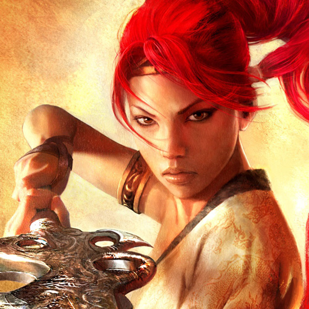

 Heavenly Sword
Details
 |
|
| Playtime | Not Played |
| Last Activity | Never |
| Added | 5/1/2025 23:00:25 |
| Modified | 5/1/2025 23:02:10 |
| Completion Status | Not Played |
| Library | Playnite |
| Source | |
| Platform | Sony PlayStation 3 |
| Release Date | 9/12/2007 |
| Community Score | |
| Critic Score | 79 |
| User Score | |
| Genre | Action-adventure hack and slash |
| Developer | Ninja Theory |
| Publisher | Sony Computer Entertainment |
| Feature | Single Player |
| Links | Wikipedia MobyGames |
| Tag | [People] artist: Hugues Giboire [People] composer: Nitin Sawhney [People] director: Nina Kristensen [People] director: Tameem Antoniades [People] producer: Mat Hart [People] writer: Andy Serkis [People] writer: Rhianna Pratchett [People] writer: Tameem Antoniades |
Description
Heavenly Sword is a 2007 action-adventure game developed by British company Ninja Theory and published by Sony Computer Entertainment for the PlayStation 3. The game revolves around player-character Nariko and her eponymous sword, battling against the forces of a tyrant warlord who seeks to destroy her clan.
Heavenly Sword received a mainly positive reception and sold over a million copies; it was praised for its graphics and combat system, while criticism stemmed from the short length of the game and lack of online capabilities.
Gameplay
The game is an action-adventure title with heavy elements of hack and slash gameplay. The gameplay of the game resembles a martial arts title focused on melee combat while featuring opportunities for ranged attacks. The main character, Nariko, uses a weapon called the "Heavenly Sword" which changes into one of three forms depending on what attack stance the player uses as part of a unique fighting style. Speed Stance provides an even balance between damage and speed, where the sword takes the form of two separate blades. Range Stance allows fast, long-range, but weaker attacks, with the sword being two blades chained together. Power Stance is the most powerful, but slowest style, where attacks are made with the sword in the shape of one large, two-handed blade.
For exploration and certain battles, the game also makes use of quick time events (QTE). During a QTE, a symbol for a certain button or for an action such as moving the analog stick to the right or left appears on-screen and the player must match what is shown to successfully complete the scene.
In addition to Nariko, a secondary character, Kai, is controlled for some portions of the game. Many of Kai's stages take the form of sniping missions, using her crossbow to pick off enemies, in some cases to protect characters. While Kai cannot perform hand-to-hand combat, in stages that call for her to explore the level she is able to hop over objects and to free herself from an enemy's grasp by temporarily stunning them.
Projectiles can be maneuvered to their targets using the motion-sensing capabilities of the Sixaxis controller through a feature known as Aftertouch. Such projectiles include guiding Kai's arrows after she has launched them, and for Nariko, guiding a cannon or rocket launcher, or picking up and throwing objects.
Plot
Setting
The game's story and mythos revolves around the titular Heavenly Sword, a blade said to have been wielded by an unnamed Heavenly deity against a demonic warlord called the Raven Lord. After the battle was won and the Raven Lord defeated, the sword was left in the mortal world, becoming the center of wars over its power. The fighting made the sword lust after the life of its users, eventually killing them after a short time. A warrior tribe finally took charge of the sword, ending the wars and pledging to keep it safe and unused for the world's own good. Among the tribe, a legend said that the sword's original wielder would be reborn in the year of the "fire-horse", and that this figure would unite the world's scattered tribes and lead the world to peace.
The game's narrator and main protagonist is Nariko (Anna Torv), a headstrong red-headed woman who was born in the year of the prophesied divine warrior: because she was a woman, her clan saw her as a mockery of the prophecy and a portent of doom. The game's main antagonist is King Bohan (Andy Serkis), a tyrannical ruler who is determined to bring the world's tribes to heel and pave the way for a new golden age. Nariko is trained as a warrior by her father, Master Shen (Ewan Stewart), who both cares for her as a child and has difficulty coping with her role in the clan's seeming undoing and the death of his wife. Nariko's only friend is Kai (Lydia Baksh), a wild and erratic young girl who is the last member of a clan destroyed by the armies of Bohan. Among Bohan's servants are his general, Flying Fox (Steven Berkoff): his serpentine mistress Whiptail (Race Davies): and Roach (Richard Ridings), Bohan's son, of whom the king is so ashamed because of Roach's obese appearance that he will not even acknowledge Roach as his own.
The game begins in medias res, with Nariko fighting the forces of Bohan. As she is fighting the sword finishes draining her life and she seemingly dies, waking in a field and speaking to the power within the sword about what has happened. Five days before, Nariko's clan is assaulted by King Bohan's forces. Before she joins the fight, Shen thrusts the sword into the ground next to her demanding that she take care of it. Nariko fights alongside her father and her clansmen as their defenses are weakened and stretched by scores of Bohan's warriors scaling the city walls accompanied by catapults. As the warriors and Shen escape from Bohan's Army, Nariko protects them until spotting a catapult moving toward the fort. As Shen had earlier instructed her, she flees, as the fortress is apparently destroyed behind her. She passes a large black bird with a golden head, the animal form of the Raven Lord. When Bohan's army captures her father and corners her Nariko has no choice but to wield the sword to defend herself in order to escape. She takes a flying leap off a cliff edge as Bohan's archers begin firing at her. Kai finds Nariko after disobeying Shen's orders to hide and informs her of the temple where her father and clansmen are held captive. Nariko infiltrates the temple and is ambushed by Flying Fox. She defeats the general and continues on to rescue her father. Meanwhile, King Bohan plots to set up a trap for Nariko with Whiptail. Nariko falls into the trap, and Whiptail, after watching most of her personal guards defeated, tells Nariko the truth behind her father's original feelings about her birth - Shen wanted to kill Nariko shortly after her birth, but was unable to bring himself to do so. Nariko tells her father to leave her and fights with Whiptail. After Nariko impales Whiptail with the sword, King Bohan turns up and snaps Whiptail's neck in her dying moments, then captures the sword and an incapacitated Nariko.
As Shen escapes, Kai makes her way to Nariko's cell. Kai is able to find where Nariko is imprisoned and begs that she comes home with her. Nariko explains to Kai that she needs to reacquire the Heavenly Sword to kill King Bohan. She asks Kai to retrieve the sword and Kai accepts the task. Kai succeeds in finding the Heavenly Sword, only to also discover her mother's skeleton. In a flashback, it is revealed that, some years ago, Kai's mother was murdered in front of her eyes by Flying Fox. Returning to the present, Kai is confronted by Flying Fox and barely manages to escape from him with the sword. Meanwhile, Nariko is forced by Bohan to fight before his army against Orangumen, pets of Roach's. During the battle, Kai arrives and throws Nariko the sword. When Nariko defeats all the Orangumen, Bohan orders Roach to murder Nariko. After defeating Roach, both Nariko and Kai flee from the pit. Bohan then commands Flying Fox to kill Kai while his soldiers take on Nariko. As the two try to escape, Flying Fox cuts Kai off from Nariko and they are separated. Nariko desperately tails Flying Fox, but when she finally catches up, he seemingly hangs Kai in front of her. Believing Kai dead, Nariko flies into a rage and battles with Flying Fox. As Nariko and Flying Fox duel, Kai, who survived the drop, uses her crossbow to shoot an arrow into Flying Fox's head, killing him. Nariko releases the injured Kai from the noose and returns her to the care of the clan.
King Bohan rallies his men to launch a final attack to regain the Heavenly Sword. Nariko fights alongside her father and clansmen once more. Nariko kills countless numbers of Bohan's troops with ease and destroys his catapults. Despite her efforts, the sword kills her, bringing the events of the game full circle. But this time, Nariko reverses her death by making a pact with the sword to protect it from becoming a useless and dusty relic, since it needs her more than her clan needs it. Nariko returns as a goddess-like figure, and proceeds to slaughter Bohan's troops. Desperate, Bohan begs the Raven Lord (who has been seen repeatedly throughout the game watching Nariko or being with Bohan) to give him the power to destroy Nariko. Bohan gets his wish and the Raven Lord merges with him. An epic battle ensues similar to the one foretold in the prophecy. After Nariko manages to defeat Bohan, the raven leaves his body, and, despite Bohan begging for mercy, pecks his eyes out and flies away.
As Nariko raises the sword to strike the final blow, Roach comes to his father's side and begs Nariko to let him take Bohan. Nariko relents, then Roach and Bohan leave, with Bohan calling Roach his son for the first time. Though successful in protecting the sword from coming into the hands of Bohan, Nariko still must give her life for wielding it, for that is the price for using the almighty sword, and the story comes to its end. Nariko reflects that she believes they have fought in vain for the prophecy, that the sword was not from Heaven, but feels gratified that she chose to be the one who was going to save her people from evil: she took the sword, paid the price and ultimately defeated Bohan's army, but nevertheless she was still a normal woman. Nariko heals Kai, and gives her the sword for safekeeping, before passing away. At the funeral, Nariko's body is placed into a boat filled with blossoms, and Kai and Shen cast her out to sea.
Development
Heavenly Sword began development in 2002 at Ninja Theory. After establishing early concept, a CGI trailer was produced which helped guide future development, described by the team as an iterative process where many other things changed around the central concept. The team began production without a specific console in mind, tailoring gameplay elements to the PlayStation 3 when the game was picked up by Sony as an exclusive for their upcoming platform. The game was developed using Havok Complete, a combination of Havok Physics and Havok Animation. Production began with the aim of telling a cinematic action adventure inspired by recent films including Crouching Tiger, Hidden Dragon and Hero, with a later fantasy influence inspired by the themes of The Lord of the Rings. Other influences included the game Ico (2001), the graphic novel La Tour, and the South Korean movie Musa. The game eventually developed a distinct visual and narrative identity while maintaining elements from these early inspirations. Nariko's three combat styles drew direct inspiration from the dragon forms in Panzer Dragoon Orta (2002).
The character designs were intended to stand out from each other, with distinct elements ranging from color coding to how a character moved. Nariko was made recognisable both with her unique red hair and the simplicity of her outfit compared to other characters. The early concept designs were heavily influenced by Japanese art, and while it retained a strong Far Eastern theme with influences from Japan and China, the team also incorporated references to Mongolian and South American environments and architecture.
Character movement was an important element for the team. Kai's movements were based on several elements, including cats and Princess Mononoke protagonist San. While they were still faced with technical restrictions, the team had access to hardware which better enabled them to realise their world and character design. Ninja Theory collaborated with Peter Jackson's company Wētā FX to create realistic facial expressions both during cutscenes and in gameplay. All of the actors involved in the project had previously been involved in film or television. Actor Andy Serkis performs as the voice and motion capture actor for King Bohan, one of the major characters in Heavenly Sword; he also acts as dramatic director for the game and is one of the writers of the story of the game. Nariko is voiced by Australian actress Anna Torv.
A demo was released to the PlayStation Store on 26 July 2007, featuring a short, cinematic clip at the beginning and two brief enemy battles, lasting approximately five to ten minutes. An eight-second clip of the game was seen in an episode of the TV series Heroes entitled "Parasite", ostensibly being played by Jessica Sanders and her son, Micah. It featured Nariko running across ropes as they were cut by Bohan's soldiers, before landing on the platform to face them. While the episode was broadcast over four months before the actual release of the game, the level displayed remained in the released build, including the rope sequence shown; the icons in the final game used to inform the player which buttons to press were changed from large, central icons as seen in the clip, to be smaller and positioned at the bottom of the screen. Sony and Ninja Theory have made five 'making-of' videos about the production of Heavenly Sword, with each one detailing a certain aspect of the game's production, from music to motion capture. The videos can either be unlocked while playing the game or downloaded from the PlayStation Store.
Soundtrack
Nitin Sawhney composed the music for the soundtrack. It was performed by the City of Prague Philharmonic Orchestra conducted by Stephen Hussey. Tameem Antoniades of Ninja Theory said "we have our big orchestral soundtrack but we wanted to add a more ethnic element and marry those two together. There are actually very few musicians in the world who are experts in both areas. Nitin Sawhney is one of them." Sawhney stated that his creation of "musical textures take in everything from Hollywood, European and Chinese cinema to Indian and middle eastern instrumentation through the orchestras and soloists hovering between sonic tidal waves and reflective moments of intimate grace."
Related media
Animated series
A series of Heavenly Sword animated episodes were released prior to the launch of the game itself, acting as a prologue to the events of the game. The series, which consists of five episodes, was produced by London production company Blinkink and animated by CHASE Animation Studios, headed by Robert Chandler. The videos were made available both online and through the PlayStation Store. The first two videos were also included on the retail version of the game; the latter three videos were not ready in time to be included.
The style of the animated series differs from the graphics of the game itself. The animated series relies on a simple and stylized 2D look, which allowed director Ben Hibon to "create a complete visual re-interpretation of the world and its inhabitants". The videos were produced using a combination of Adobe Photoshop, Flash and After Effects. Initial reference frames were created with Photoshop, which were then animated in Flash and exported as separate layers into After Effects. The layers were composed onto a 3D stage with multiple foreground, middle ground and background elements, which allowed the use of 3D cameras and lighting to give depth and movement to the video.
A computer generated animated film version was produced by Blockade Entertainment and scripted by writer Todd Farmer. Anna Torv reprises her role as Nariko, joined by Alfred Molina as King Bohan and Thomas Jane as Loki. The film was released on Blu-ray, DVD and on PlayStation Network on 2 September 2014.
Nariko appears as a playable character in PlayStation All-Stars Battle Royale, voiced by Jennifer Hale. A stage based on the game was later released as downloadable content.
Reception
Commercial
Heavenly Sword sold over one million copies by May 2008. Tameem Antoniades stated in March 2010 that sales were approximately one-and-a-half million but that the developer did not break even.
It received "generally favorable reviews" according to video game review aggregator Metacritic.
USA Today gave the game nine stars out of ten, saying, "PlayStation 3 fans hungry for more satisfying first-party content from Sony will be satiated with the feverish pace Heavenly Sword provides." Digital Spy gave it four stars out of five, saying, "The lavish sword combat system and the awesome presentation are what make this title a worthy buy. Sony seems to have created this game as a showcase for the PS3 and forgot about getting the gameplay up to scratch. But despite its failings, Heavenly Sword is a great buy for the excellent sword fighting sections and for those who simply want to show their friends just what the PS3 is capable of." The New York Times gave it a favorable review, saying, "The scenery is breathtaking, battles can be exciting, and the intelligent, cruel King Bohan — voiced brilliantly by Andy Serkis (...) — is one of the best video game villains ever. The game is frustrating because it seems as if it should have been a great game and as if its creators tried to make it a great game, but it managed to be only a pretty good one." Maxim gave it a score of six out of ten, saying, "A few of the puzzles are a total bitch, the button-press sequence/finishing moves that the game steals directly from God of War require too much precision, and the sniper sequences wind up being even more tedious than the fighting. It's fun for a little while, and very flashy, but in the end, for everything Heavenly Sword does right, it does two more things wrong." The A.V. Club gave it a C+ and stated that "If Metal Gear Solid and Halo had acting this good, we'd be on to something." In Japan, Famitsu gave the game a score of two sevens and two eights, for a total of 30 out of 40.
During the 11th Annual Interactive Achievement Awards, the Academy of Interactive Arts & Sciences nominated Heavenly Sword in three categories: "Outstanding Character Performance", "Outstanding Achievement in Art Direction", and "Outstanding Achievement in Original Music Composition".
GamesRadar featured Kai in the article "Freakish fashion" in 2007, and Nariko as a "game babe" sex symbol in 2007 and 2009. In 2009, MSN featured Nariko in the article "Gaming's Hottest Babes". UGO featured her among the "Top Animated Hotties" in 2008 and in their list of the best girls in video games in 2011, and also in the article "11 Strong Gaming Girls We Never Saw Again" in 2010. In 2010, Lisa Foiles of The Escapist ranked Nariko first in the "Top 5 Impractical Female Character Hairstyles". In 2013, she was ranked as the 18th greatest heroine in video game history by Complex.
Cancelled sequel
According to Ninja Theory co-founder Tameem Antoniades, the story for the sequel has already been written; in fact a whole trilogy is being planned. He stated, "We've had the story for the sequel for a while now. Hopefully, if this game is successful, then there's no reason why there shouldn't be a sequel and we'd very much like to go into that."
In March 2008, it was confirmed that Ninja Theory is not planning to create a sequel for Heavenly Sword, and instead has decided to work on a new project (most likely Enslaved: Odyssey to the West). Sony Computer Entertainment retains the intellectual property of Heavenly Sword, and there is always the possibility of production on a sequel being outsourced to another developer. In June 2008, it was reported that a sequel to Heavenly Sword was in-development at SCEE Cambridge Studio, but was canceled due to Sony no longer seeing it as a commercially viable product. Concept art for the title later surfaced in 2012.